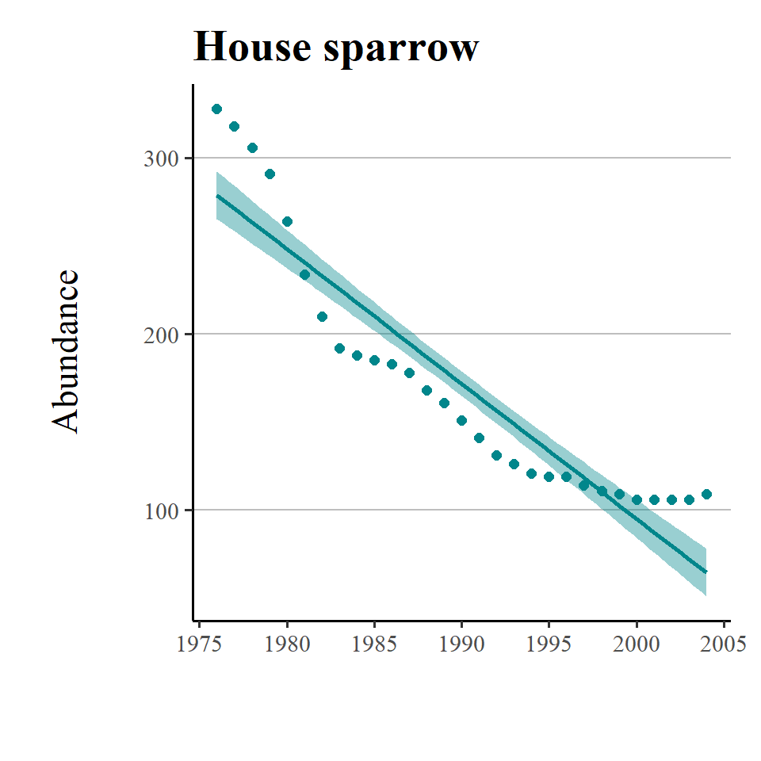
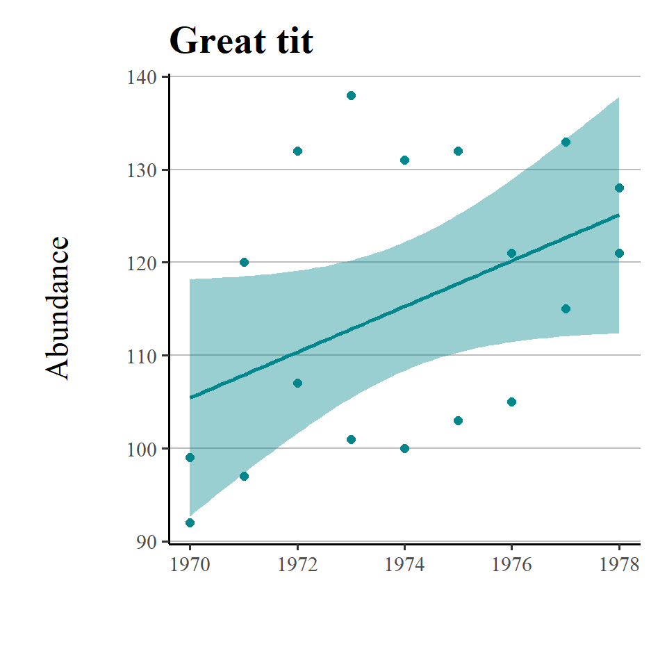
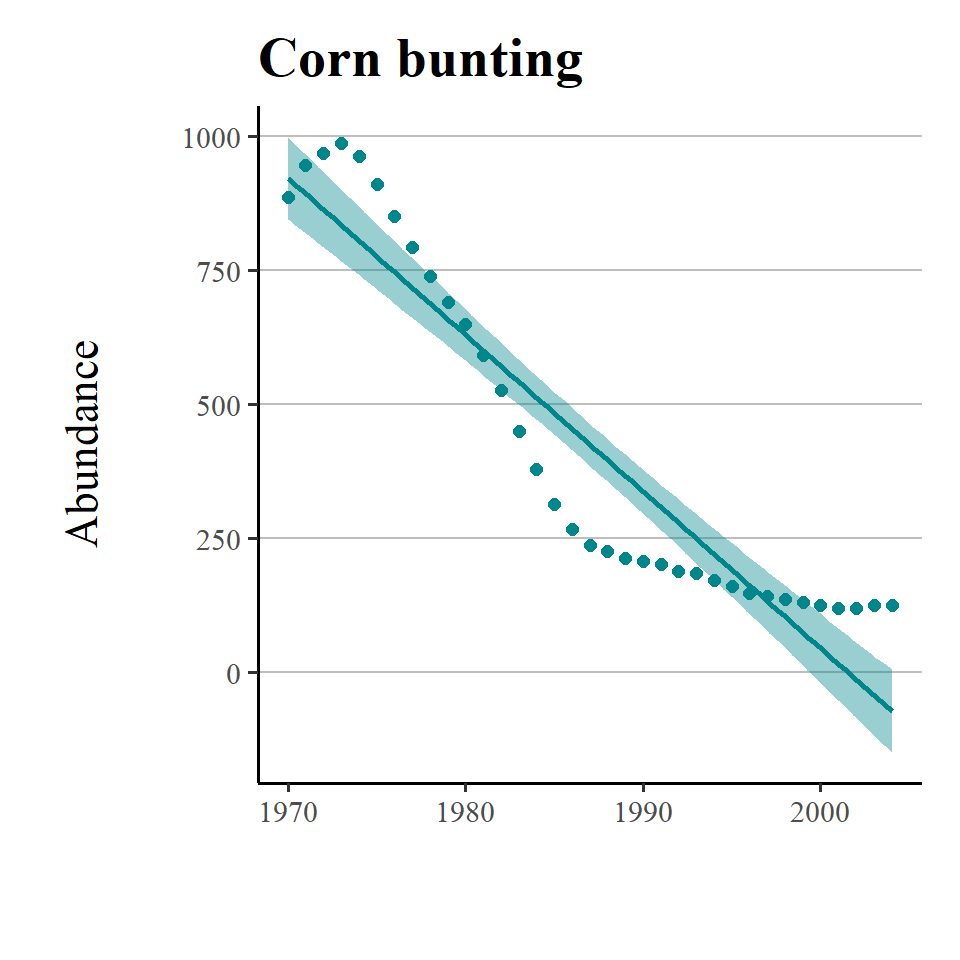
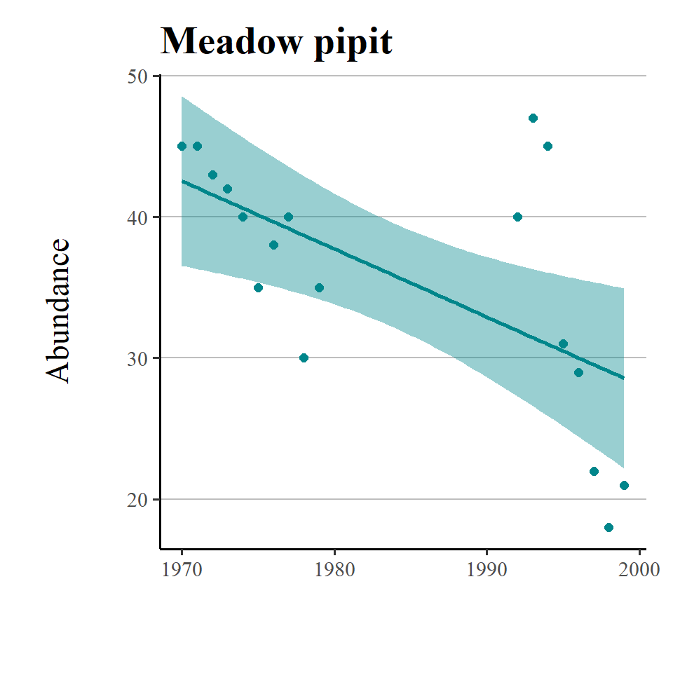

9 Functions
https://swcarpentry.github.io/r-novice-inflammation/02-func-R/
https://www.datamentor.io/r-programming/function/
https://r-coder.com/function-r/#Input_arguments_in_R_functions
http://faculty.washington.edu/kenrice/rintro/intro17sess09v2.pdf
In this chapter we are going to look at two processes that streamline our code and make it more efficient. The principle behind this is to try and make DRY code.
So what the flip is DRY code anyway? It stands for Don't Repeat Yourself. It's aimed at reducing the repetition and number of lines of code in your scripts.
Why is this useful?
If you keep repeating the same/similar lines of code over and over then your script will become very large
Changes or updates have to be manually applied to each and every time you have used a line of code in your script
Mistakes can easily start to creep in
There are two broad ways we can DRY out our code:
Use Functions - functions contain code instructions, and we can re-use them for similar processes simply by changing the arguments. In R you can use pre-built functions and start building your own!
Use Iteration - Apply functions to loop/repeat over different groups or lists.
9.1 Functions
Most of the time when we work in R, we will use functions; either pre-written functions or ones we write ourselves. Functions make it easy to use sets of code instructions repeatedly (without filling our scripts with the code underlying the function) and help us carry out multiple tasks in a single step without having to go through the details of how the steps are executed.
9.1.1 Common functions
You have been using functions in R from week one, we type the name of the function followed by parentheses e.g. read_csv(). Within the parentheses is where we will specify the function input and options, separated by commas ,. One function you will use a lot is the combine function c(), which as the name suggests lets you concatenate different types of values into a vector.
9.1.2 Write your own function
R makes it easy to create user defined functions by using function(). Here is how it works:
Give your function an object name and assign the function to it, e.g.
my_function_name <- function().Within the parentheses you specify inputs and options just like how pre-written functions work, e.g.
function(input_data).Next, put all the code you want your function to execute inside curly brackets like this:
function(input_data) {code to run}Use
return()to specify what you want to your function to output once it is done running the code.
vector <- c(1,5,10)
add_one <- function(.x) {
return(.x + 1)
}
add_one(vector)## [1] 2 6 119.1.3 Activity 1: Use the following instructions to complete the function in the window below:
I’ve started writing a function for you that will sum up values and take the square root of the sum. To take the square root, we use the
sqrt()function.Complete this function by filling in input_data for the
sum(), and then filling in the remaining empty parentheses with the appropriate object names.Now create an object containing a set of numerical values and call it
my_combined_values. Then try out your new function on this object, which will compute the square root of the objects sum.
# Use the instructions above to complete the function below
my_function_name <- function(input_data){
s <- sum( )
ss <- sqrt( )
return( )
}
# Create a new object and try out your new function
my_combined_values <- c(,)
my_function_name(my_combined_values)A general rule of thumb. If you end up repeating a line of code more than three times in a script - you should write a function to do the work instead. And write clear comments on its use!
Why?
It reduces the numbers of lines of code in your script, it reduces the amount of repetition in the code, if you need to make changes you can change the function without having to hunt through all of your code.
A really good way to organise your functions is to organise them into a separate script to the rest of your analysis. Write functions in a separate script and use source("scripts/functions.R")
9.1.4 Activity 2: More functions
It might surprise you to know that there is no prebuilt function for standard error in base R, but we can build our own!
# The seq R function generates a sequence of numeric values
x <- seq(8, 20, length=100)
# use the mean function to calculate average for x
mean(x)
# use our custom function to calculate se for x
se(x)## [1] 14
## [1] 0.3516544Functions can basically be given any name you want. However, you may accidentally overwrite existing functions if you give them the same name, so try and make them unique.
9.1.5 Even more functions
This is an example of a very simple function that just prints the string "Hello World" whenever you type the function say_hello()
say_hello <- function(){
paste("Hello World")
}
say_hello()## [1] "Hello World"Now lets try a similar function, but we include an argument:
say_morning <- function(x){
paste("Good morning", x)
}
# what about this one?
say_morning("Phil")## [1] "Good morning Phil"So that was an example where we included an argument for our function. But now it requires a value be provided in order to work.
However, you are probably used to the idea that many functions have "default" values for arguments, and we can easily set these.
say_morning_default <- function(name = "you"){
paste("Good morning", name)
}
say_morning_default()## [1] "Good morning you"There is now a default value supplied to the argument, but this should still be able to changed when running the function. Try it!
9.1.6 Activity 3
We are going to try and write a custom function called find_largest_male(), it will be used to identify the largest male Drosophila from a small dataset.
9.2 Custom ggplot themes
It is often the case that we start to default to a particular 'style' for our figures, or you may be making several similar figures within a research paper. Creating custom functions can extend to making our own custom ggplot themes. You have probably already used theme variants such as theme_bw(), theme_void(), theme_minimal() - these are incredibly useful, but you might find you still wish to make consistent changes.
Here is a plot we made in the previous chapter
plot <- dros_weight %>%
ggplot(aes(x=sex,
y=weight_mg))+
geom_jitter(width = 0.1)
plotWith the addition of a title and theme_classic() we can improve the style quickly
plot+
ggtitle("Comparison of weights (mg) between \nmale and female Drosophila")+
theme_classic()But I still want to make some more changes, rather than do this work for one figure, and potentially have to repeat this several times for subsequent figures, I can decide to make a new function instead.
# custom theme sets defaults for font and size, but these can be changed without changing the function
theme_custom <- function(base_size=10, base_family="serif"){
theme_classic(base_size = base_size,
base_family = base_family,
) +
# update theme minimal
theme(
# specify default settings for plot titles - use rel to set titles relative to base size
plot.title=element_text(size=rel(1.5),
face="bold",
family=base_family),
#specify defaults for axis titles
axis.title=element_text(
size=rel(1),
family=base_family),
# specify position for y axis title
axis.title.y=element_text(margin = margin(r = 10, l= 10)),
# specify position for x axis title
axis.title.x = element_text(margin = margin( t = 10, b = 10)),
# set major y grid lines
panel.grid.major.y = element_line(colour="gray", size=0.5),
# add axis lines
axis.line=element_line(),
# Adding a 0.5cm margin around the plot
plot.margin = unit(c(0.5, 0.5, 0.5, 0.5), units = , "cm"),
# Setting the font for the legend text
legend.text = element_text(face = "italic"),
# Removing the legend title
legend.title = element_blank(),
# Setting the position for the legend - 0 is left/bottom, 1 is top/right
legend.position = c(0.9, 0.8)
)
}With this function set, I can now use it for as many figures as I wish. To use it in the future I should probably save it in a unique script, with a clear title and comments for future use.
I could then easily use source("custom_theme_function.R") to make this available to any scripts I was using.
plot+
theme_custom()
9.2.1 Writing Packages
You should be familiar by now with the idea that R packages add data and functions to your workspace. They are bundles of code that anyone can write, most commonly you will be downloading packages from CRAN. However development stage packages can also be downloaded directly from GitHub.
In the previous section we walked through some very basic writing of new functions. We can save these as R scripts and move them from project to project. Or we could choose to write them into a documented R package. This tutorial shows you just how to do that. Writing packages is a useful thing to do, even if you think the only person that will ever use them is yourself, as you then more easily access these functions across different workspaces and projects.
9.3 Iteration
We’ve seen how to write a function and how they can be used to create concise re-usable operations that can be applied multiple times in a script without having to copy and paste, but where functions really come into their own is when combined with iteration. Iteration is the process of running the same operation on a group of objects, further minimising code replication.
9.3.1 For Loops
A for loop has three core parts:
The sequence of items to iterate through
The operations to conduct per item in the sequence
The container for the results (optional)
The basic syntax is: for (item in sequence) {do operations using item}. Note the parentheses and the curly brackets. The results could be printed to console, or stored in a container R object.
for(i in list){
# PERFORM SOME ACTION
}A simple for loop example is below. For every number in the vector add 2. There is no container object here, the results of the function are printed directly into the console.
for (num in c(1,2,3,4,5)) { # the SEQUENCE is defined (numbers 1 to 5) and loop is opened with "{"
print(num + 2) # The OPERATIONS (add two to each sequence number and print)
} # The loop is closed with "}" ## [1] 3
## [1] 4
## [1] 5
## [1] 6
## [1] 7[1] 3
[1] 4
[1] 5
[1] 6
[1] 7So let's make a slightly more complicated function - first we are making a new tibble, first we have four vectors - made of 10 numbers each randomly generated to be roughly close to a 0 mean with a s.d. of 1. Then we combine them to make a tibble
Each vector is randomly generated so the actual averages will be slightly different
median(df$a)
# [1] 0.3085154
median(df$b)
# [1] 0.5429483
median(df$c)
# [1] -0.5137691
median(df$d)
# [1] 0.04415608So the above code works, but it is repetitive, applying the same function again and again. Below we have a simple for loop
output <- vector("double", ncol(df)) # 1. output having a predefined empty list of the right size works best, we choose to make the vector "double" specifying that it is empty and ready to receive number values.
for (i in seq_along(df)) { # 2. sequence - determines what to loop over - here we are looping along df, rather than down the length of each vector
output[[i]] <- median(df[[i]]) # 3. body - each time the loop runs it allocates a value to output,
}
output
# [1] 0.30851540 0.54294832 -0.51376911 0.0441560## [1] 0.3797134 0.2739145 0.3344583 0.17784099.3.2 Exercise for For Loops
This part of the exercise is a real world example of using simple for() loops to create graphs. This data comes from the Living Planet Index, which holds data on various vertebrate species collected from 1974 to 2014.
First we should import the data:
LPI <- read_csv("data/LPI_data_loops.csv")Here is an example of a graph we can make from the data looking at Griffon Vulture changes in numbers over time.
vultureITCR <- LPI %>%
filter(Common.Name == "Griffon vulture / Eurasian griffon") %>%
filter(Country.list==c("Croatia", "Italy"))
vulture_scatter <- ggplot(vultureITCR, aes(x = year, y = abundance, colour = Country.list)) +
geom_point(size = 2) +
# Changing point size
geom_smooth(method = lm, aes(fill = Country.list)) +
# Adding a linear model fit and colour-coding by country
scale_fill_manual(values = c("#EE7600", "#00868B")) +
# Adding custom colours
scale_colour_manual(values = c("#EE7600", "#00868B"),
# Adding custom colours
labels = c("Croatia", "Italy")) +
# Adding labels for the legend
ylab("Griffon vulture abundance\n") +
xlab("\nYear") +
theme_bw()
vulture_scatter
We can use custom themes (like the one you made earlier) to quickly update figures
vulture_scatter+theme_custom()Now let's take a look at using functions and loops to help us build figures.
LPI_UK <- filter(LPI, Country.list == "United Kingdom")
# Pick 4 species and make scatterplots with a simple regression model fits that show how the population has varied through time
# Careful with the spelling of the names, it needs to match the names of the species in the LPI.UK dataframe
house_sparrow <- filter(LPI_UK, Common.Name == "House sparrow")
great_tit <- filter(LPI_UK, Common.Name == "Great tit")
corn_bunting <- filter(LPI_UK, Common.Name == "Corn bunting")
meadow_pipit <- filter(LPI_UK, Common.Name == "Meadow pipit")So now we have four separate R objects holding data from four bird species, our standard approach might then be to make four figures looking at abundance over time.
house_sparrow_scatter <- ggplot(house_sparrow, aes (x = year, y = abundance)) +
geom_point(size = 2, colour = "#00868B") +
geom_smooth(method = lm, colour = "#00868B", fill = "#00868B") +
theme_custom() +
labs(y = "Abundance\n", x = "", title = "House sparrow")
great_tit_scatter <- ggplot(great_tit, aes (x = year, y = abundance)) +
geom_point(size = 2, colour = "#00868B") +
geom_smooth(method = lm, colour = "#00868B", fill = "#00868B") +
theme_custom() +
labs(y = "Abundance\n", x = "", title = "Great tit")
corn_bunting_scatter <- ggplot(corn_bunting, aes (x = year, y = abundance)) +
geom_point(size = 2, colour = "#00868B") +
geom_smooth(method = lm, colour = "#00868B", fill = "#00868B") +
theme_custom() +
labs(y = "Abundance\n", x = "", title = "Corn bunting")
meadow_pipit_scatter <- ggplot(meadow_pipit, aes (x = year, y = abundance)) +
geom_point(size = 2, colour = "#00868B") +
geom_smooth(method = lm, colour = "#00868B", fill = "#00868B") +
theme_custom() +
labs(y = "Abundance\n", x = "", title = "Meadow pipit")If we want to look at all four plots at once we can use the layout functions from the package patchwork.
# put at the top of your script
library(patchwork)
layout <- "AABB
CCDD"
house_sparrow_scatter+
great_tit_scatter+
corn_bunting_scatter+
meadow_pipit_scatter+
plot_layout(design=layout)
This is ok, but arguably still requires a lot of code repetition. We have used the same lines of code four times to recreate four plots that are functionally the same. If we want to make any changes to the look of our plots we have to make four separate edits & mistakes can easily creep in.
If we want to apply a loop, then the easiest thing is to first make our objects into an R list:
Sp_list <- list(house_sparrow, great_tit, corn_bunting, meadow_pipit)Then loop down the length of our list:
my_plots <- list(length(Sp_list))
for (i in 1:length(Sp_list)) {
# For every item along the length of Sp_list we want R to perform the following functions
data <- as.data.frame(Sp_list[i])
# Create a dataframe for each species
sp.name <- unique(data$Common.Name)
# Create an object that holds the species name, so that we can title each graph
plot <- ggplot(data, aes (x = year, y = abundance)) +
# Make the plots and add our customised theme
geom_point(size = 2, colour = "#00868B") +
geom_smooth(method = lm, colour = "#00868B", fill = "#00868B") +
theme_custom() +
labs(y = "Abundance\n", x = "", title = sp.name)
# makes a list of all the plots generates
my_plots[[i]] <- plot
# prints each plot out as it is made
print(plot)
}
So now we have a new object my_plots which is a list containing the four plots. This loop allowed us to code the details of our figures once, then iterate across four different groups.
wrap_plots(my_plots)+
plot_layout(design=layout) 
#wrap_plots function from patchwork can take a list of ggplotsWhat if you want to write a loop to save all four plots at once - can you modify the script to do this?
for (i in 1:length(Sp_list)) {
# For every item along the length of Sp_list we want R to perform the following functions
data <- as.data.frame(Sp_list[i])
# Create a dataframe for each species
sp.name <- unique(data$Common.Name)
# Create an object that holds the species name, so that we can title each graph
plot <- ggplot(data, aes (x = year, y = abundance)) +
# Make the plots and add our customised theme
geom_point(size = 2, colour = "#00868B") +
geom_smooth(method = lm, colour = "#00868B", fill = "#00868B") +
theme_custom() +
labs(y = "Abundance\n", x = "", title = sp.name)
if(i %% 1==0){ # The %% operator is the remainder, this handy if line prints a number every time it completes a loop
print(i)
}
# use paste to automatically add filename
ggsave(plot, file=paste("figure/", sp.name, ".png", sep=''), dpi=900)
}9.3.3 Iteration in R
Loops are a fundamental part of programming in many languages - that's why they have been introduced as a concept with examples here. However in R, Loops are used much less often than in other languages. That is because R is a 'vector based language', something we often take for granted. But what does that mean?
Here's an example - in the below written for R if we make a vector then apply a function to it, then it is applied to each element of the function, this is something we take for granted in R, but simply doesn't exist in languages like C++
x <- c(2,4,6,8,10)
x/2
# [1] 1 2 3 4 5
Instead for C++ we would be required to write a loop, in order to explicitly request that the division is applied to each element of the vector
for(i in seq_along(x)){
x[i] = x[i]/2
}
x
# [1] 1 2 3 4 5
A lot of functions in R are already vectorised and you don't even have to think about this concept. When we want more control over how this vectorization is applied, we have used the function group_by() It allows us to subset our data into hidden vectors, then command R to perform subsequent dplyr functions on each group separately. Because of the combined functionality of R's vectorization and dplyr's data tools you might find there is little need for loops. When we do wish to apply a function that isn't vectorize in the way we want - then tidyverse has an answer to this as well - purrr Henry & Wickham (2020) and the map() function
9.3.4 map()
There are also a few other advantages to using map() - you can use it with pipes %>%, it handles errors better than normal for loops, and the syntax is quite clean and simple!
Remember purrr is a very tidyverse focused method of iteration, so understanding for loops can be useful if you end up learning other programming languages in the future.
purrr is more focused on the function, and less obviously focused on the looping aspect, as you might be able to see below.
Basic map() will always return a list of values
-
map_lgl()returns a logical -
map_int()returns an integer vector -
map_dbl()returns a double vector -
map_chr()returns a character vector -
map_df()returns a data frame
# Apply n_distinct to all variables, returning a double (numeric) for each
map_dbl_result <- LPI %>%
map_dbl(n_distinct)
# Print out result
map_dbl_result
# Print out type of result
typeof(map_dbl_result)## ...1 Class Order Common.Name Country.list Region
## 182163 15 101 2948 360 10
## system biome realm year abundance
## 5 34 17 45 30913
## [1] "double"
# Apply n_distinct to all variables, returning a dataframe
map_df_result <- LPI %>%
map_df(n_distinct)
# Print out result
map_df_result
# Check if output is a data frame (tibble in this case)
is_tibble(map_df_result)| ...1 | Class | Order | Common.Name | Country.list | Region | system | biome | realm | year | abundance |
|---|---|---|---|---|---|---|---|---|---|---|
| 182163 | 15 | 101 | 2948 | 360 | 10 | 5 | 34 | 17 | 45 | 30913 |
## [1] TRUEI think map_df is extremely useful because you can feed it’s output directly into a ggplot2 call:
LPI %>%
map_df(n_distinct) %>%
# Convert to longer format
pivot_longer(everything(), names_to = "variable", values_to = "count") %>%
# Start plotting
ggplot(aes(x = variable, y = count)) +
geom_col() +
coord_flip()Now you have a simple grasp of purrr you should see that we have a list containing species objects, and an anonymous function ~ggplot on the right. We can use this to quickly make four plots, just like we did with our for loops.
the map() function takes a list or vector as the first argument, and a function (prefixed by ~) as the second argument, it will then apply the function to each element of the list or vector. It will then return the output as new list. Simple!
my_plots_2 <-
map(Sp_list, ~ ggplot(., aes (x = year, y = abundance)) +
geom_point(size = 2, colour = "#00868B") +
geom_smooth(method = lm, colour = "#00868B", fill = "#00868B") +
theme_custom() +
labs(y = "Abundance\n", x = ""))
wrap_plots(my_plots_2)+plot_layout(design=layout)9.4 More Practice
If you want to play with basic coding more, try some of these other tutorials, if you try them, let me know how you get on!
9.5 Summary
Making functions and iterations are advanced R skills, and can often seem daunting. I do not expect you to HAVE to implement these for this course, but I do want to give you an insight into some core programming skills that you might be interested in and want to develop.
Below are some links you may find useful